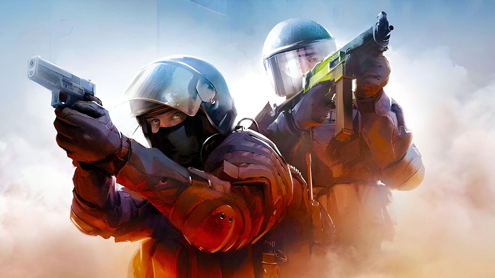
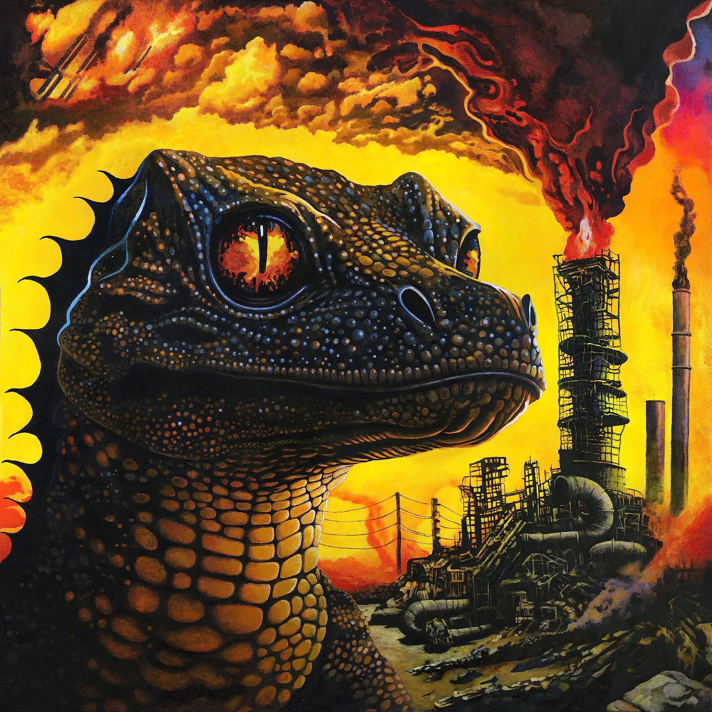

Sobre mim
Olá! Meu nome é Lucas Rodrigues e eu moro em Joinville desde 2020 e sou apaixonado por tecnologia. atualmente trabalho como suporte técnico em uma empresa de hospedagem.
Meus Hobbies e Paixões
Um dos meus principais hobbies é jogar Magic: The Gathering. É um jogo que une estratégia, criatividade e coleção de cartas. Amo ficar horas jogando com amigos nos mesões do modo Commander, tenho um deck preferido feito com toda a temática de O Senhor dos Anéis.

Pilha de cartas de Magic: The Gathering.
Também amo jogar Counter-Strike 2, uma paixão que também vem desde a adolescência, desde a versão Counter Strike: Global Offensive. É o jogo que me traz mais adrenalina.
Counter-Strike 2
Amo ouvir uma boa música e tenho um gosto bem variado com preferência em instrumentais que conseguem transmitir algum sentimento, os estilos musicais que mais gosto são Stoner Rock, com seus riffs pesados e psicodélicos, e o Power Metal, com sua energia épica e melodias marcantes.
Album Petro Dragonic Apocalypse de King Gizzard & the Lizard Wizard.